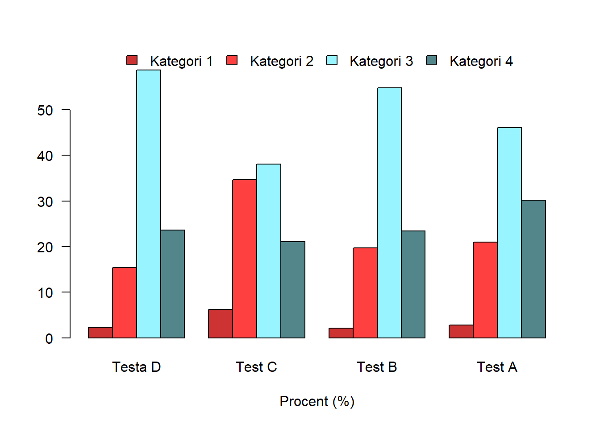

Kapitel 5 Funktioner
En funktion utför operationer på objekt. Oftast sparas sedan resultatet som ett nytt objekt. Genom att ändra argument kan man anpassa vad funktionen gör. Börja med att skriva in nedanstående tre vektorer.
# Skapar två numeriska vektorer
x <- c(3, 1, 1, 5, 0)
y <- c(2, 3, 5, 6, 9)
ymis <- c(3, NA, 6, 3, 6)Skriv därefter in nedanstående kod, spara och kör.
[1] 10## [1] 5# Beräkna medelvärdet av en vektor
xbar <- sum(x)/n
xbar
# Beräkna stickprovsvarians s^2
s2 <- sum( (x - xbar)^2 )/(n -1)
s2
# Funktioner för medelvärdet och stickprovsvarians. Jämfört med resultat ovan
mean(x)
var(x)
# Skapa en vektor som repeterar ett värde
z <- rep(3, 5)
z
# Funktion som skapar en sekvens från 2 till 3 med steglängd 0.25
w <- seq(from = 2, to = 3, by = 0.25)
w
# Skapa en en vektor av element som repeterats
r <- c(rep(1, 3), rep(4, 2), rep(9, 10))
r
# Summan av ymis blir NA eftersom 3 + NA + 6 + 3 + 6 blir NA.
sum(ymis)
# Funktionen help() ger en beskrivning av vad en funktion gör
help(sum)I hjälpfilen står under Usage sum(..., na.rm = FALSE). och under Arguments ... numeric or complex or logical vectors. samt na.rm logical. Should missing values (including NaN) be removed?. Grundinställningen (default) är FALSE, det vill säga NA inkluderas i funktionen. För ta bort missing valus väljs na.rm=TRUE
Hjälpfilerna är ofta svår att förstå, men exemplen längst ner i hjälpfilerna är i regel klargörande.
Funktioner smo är vanliga att använda är funker


Det är enkelt att skapa egna funktioner i R och vilket är styrka.
Avslutningsvis finns det par viktiga funktioner för att hantera dataobjekt.
# Funktionen ls() listar alla objekt i minnet
ls()
[1] "n" "r" "s2" "w" "x" "xbar" "y" "ymis" "z"
# Funktionen rm() raderar ett objekt
rm(y)
# Se om objektet y finns kvar
ls()
[1] "n" "r" "s2" "w" "x" "xbar" "ymis" "z" Spara återigen scriptet. Stäng R.
För att radera alla objekt används kommandot rm(list = ls()). Var försiktig med denna funktion eftersom allt försvinner! Emellertid kan det vara en god idé inleda en dataanlys med denna kod för att säkerställa att minnet är tomt innan data läses in och analyser görs så att konflkter mellan objekt inte uppstår.